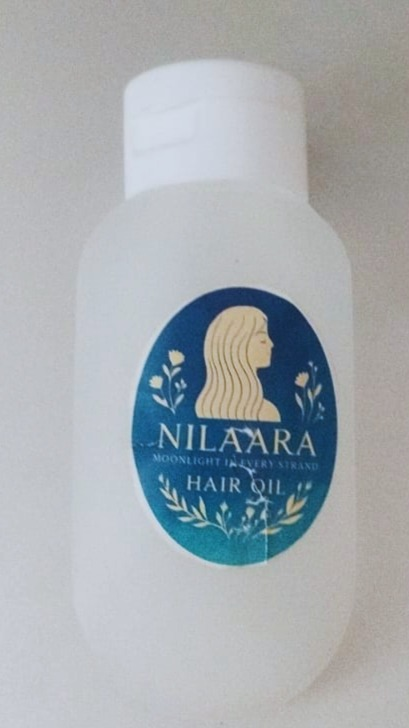
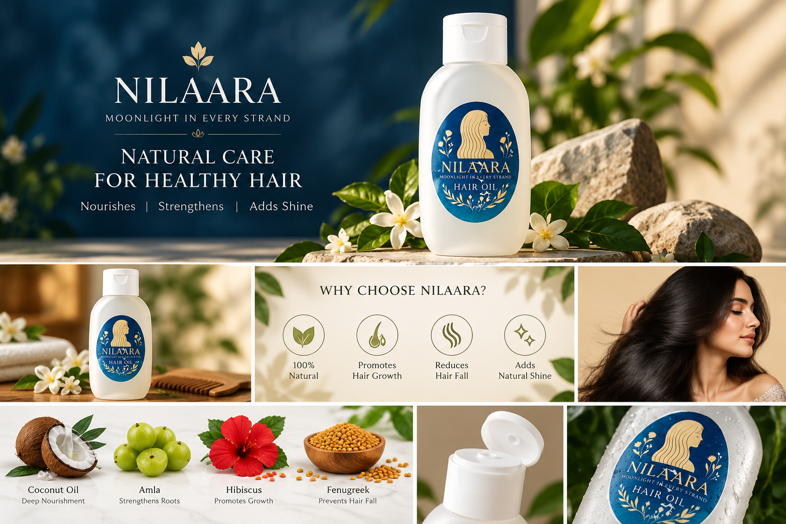

◉
Onion
A familiar ingredient in traditional hair-care blends.
BOTANICAL HAIR CARE
Meet your moment of care. Nilaara brings together traditional botanical ingredients and a beautiful floral fragrance for a feel-good hair oil ritual.


A RITUAL, NOT A RUSH
Some rituals are passed down. Others become your own. Nilaara celebrates the familiar comfort of hair oiling with a thoughtfully chosen blend of botanical ingredients and soft floral notes.
Take a pause, massage gently, and make a little space for yourself. Your hair-care routine can be a moment to slow down.
Meet your new ritual →FROM NATURE, WITH CARE
Inspired by traditional hair-care ingredients. Every ingredient has its own story.
A familiar ingredient in traditional hair-care blends.
Known for its earthy character and cooling fragrance.
A classic botanical used in hair-care traditions.
A distinctive seed valued in traditional formulations.
A traditional herb included in the botanical blend.
A familiar leaf in South Indian hair-care rituals.
Fenugreek seeds, traditionally used in hair-care routines.
An aromatic leaf with a place in home traditions.
A traditional ingredient used in many botanical blends.
Licorice root, known in traditional botanical practices.
The traditional-style coconut oil base at the heart of the blend.
Rose, jasmine, lavender and rosemary for a soft, aromatic finish.
Ingredient descriptions are for general information only. Please confirm the final formula, ingredient list and any product claims before publishing.
“Make time for the little things
that help you feel like yourself.”
SLOW DOWN. OIL UP.
Build a hair-oiling ritual that works for you. Follow the product label and your own scalp-care needs.
Make a momentChoose a calm, comfortable time.
Apply with careUse the amount and method recommended on the product label.
Make it your ritualFollow the label for leave-in time and washing instructions.
GOOD TO KNOW
Nilaara is a hair oil brand built around a botanical-inspired ingredient blend and a floral fragrance profile. Check the product label for the final formulation and directions.
Please follow the directions printed on your bottle. If you have a sensitive scalp, consider a small patch test before first use and stop using the product if irritation occurs.
Hair and scalp needs vary. Review the product ingredients and consult a qualified professional if you have a scalp condition or concerns about suitability.
Send us an enquiry using the contact section below. We can help you add your official phone number, WhatsApp link and product details.
LET'S CONNECT
Ask us about the product, pricing and availability.